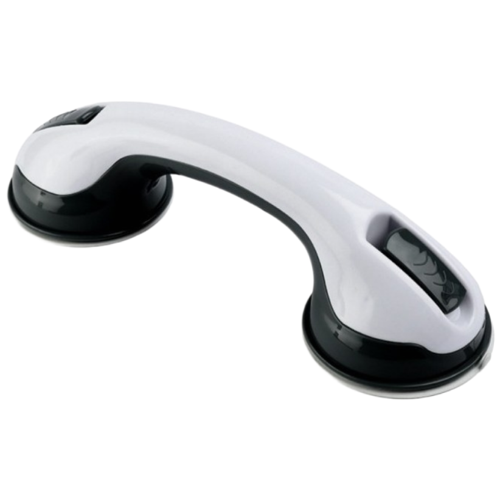
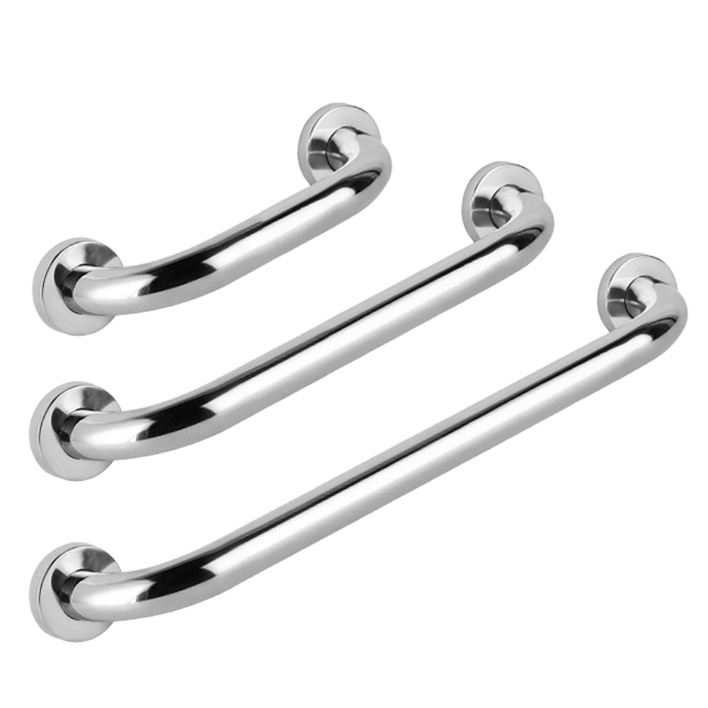
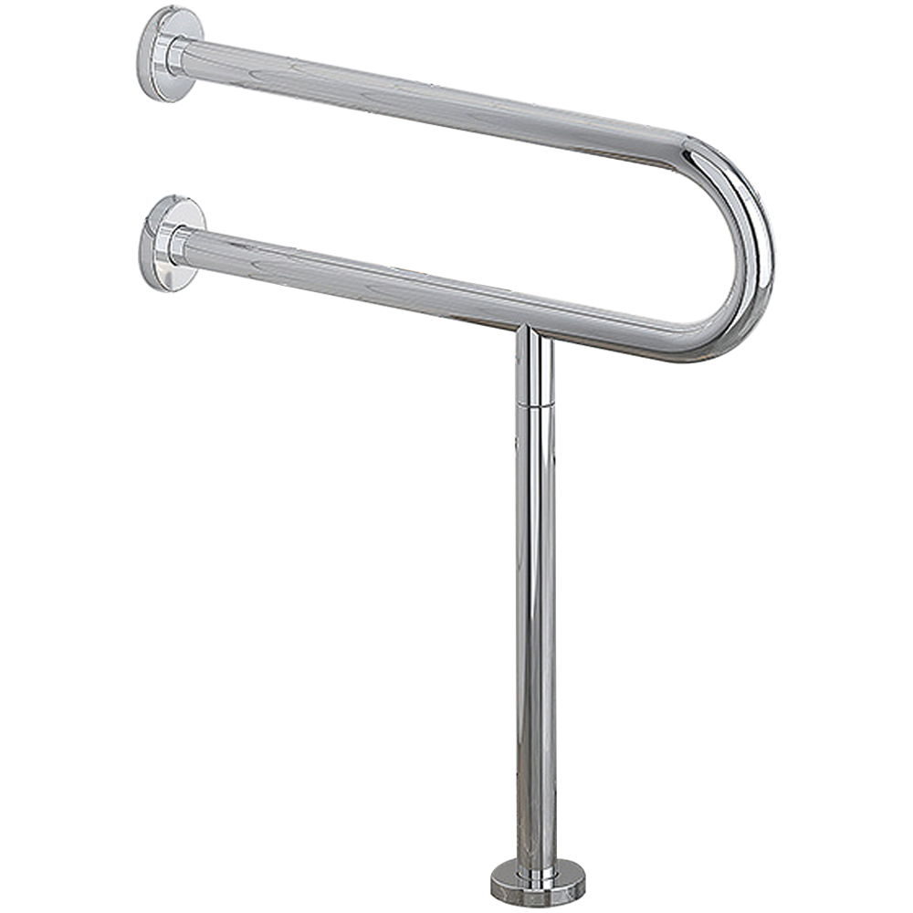

욕실 안전손잡이 추천 TOP 3 — 흡착식·고정식 비교
이 글에는 쿠팡 파트너스 활동의 일환으로 일정액의 수수료를 제공받는 링크가 포함되어 있습니다.
어르신 낙상의 상당수가 욕실·화장실에서 일어납니다. 안전손잡이(그랩바)를 잡을 위치에 달아두면 앉고 일어서고 이동하는 동작이 훨씬 안전해집니다. 흡착식과 고정식을 설치·내구 기준으로 정리했습니다.
한 줄 정리
간단히 붙였다 떼는 흡착식(보조용), 튼튼하게 잡는 고정식(고급형), 특수 위치·형태면 특수형이 무난합니다. 체중을 실어 기대는 용도는 반드시 나사 고정식을 쓰세요.
추천 요양용품 TOP 3
가성비

흡착식 보조
흡착식 안전손잡이
12,360원 · 쿠팡 기준(변동 가능)
흡착식설치 간편탈부착
이런 분께 · 나사 없이 간단히 설치·이동하려는 경우
- 타일에 붙였다 뗄 수 있어 설치가 간편
- 전월세·이동 설치에 부담이 없음
참고 · 흡착식은 보조용입니다. 체중을 온전히 싣는 지지대로는 부적합하니 부착 상태를 자주 확인하세요.
쿠팡 최저가 확인하기 →베스트

고정식 고급형
모칸도 안전손잡이 고급형 (지름 3.2cm 고정식)
25,860원 · 쿠팡 기준(변동 가능)
고정식굵은 그립내구
이런 분께 · 체중을 실어 기댈 튼튼한 손잡이가 필요한 경우
- 나사 고정식이라 체중 지지가 안정적
- 굵은 그립(3.2cm)으로 손에 잘 잡힘
참고 · 벽에 나사 설치가 필요합니다(타일 시공 주의).
쿠팡 최저가 확인하기 →프리미엄

특수형
안전 손잡이 특수형 (노인·장애인·환자 화장실)
45,900원 · 쿠팡 기준(변동 가능)
특수형고정식화장실
이런 분께 · 변기 옆·특수 위치에 맞춤 설치가 필요한 경우
- 형태·각도가 다양해 위치에 맞게 설치
- 고정식이라 지지력이 안정적
참고 · 설치 위치·시공을 미리 확인하세요.
쿠팡 최저가 확인하기 →| 구분 | 가성비(흡착식) | 베스트(고정식) | 프리미엄(특수형) |
|---|---|---|---|
| 설치 | 흡착(탈부착) | 나사 고정 | 나사 고정 |
| 지지력 | 보조용 | 안정적 | 안정적 |
| 추천 | 간편·이동 | 체중 지지 | 맞춤 위치 |
| 가격대 | 1만원대 | 2만원대 | 4만원대 |
흡착식과 고정식, 뭘 고를까
흡착식은 나사 없이 붙였다 뗄 수 있어 설치가 간편하지만, 어디까지나 보조용입니다. 온전히 체중을 실어 기대는 용도로는 부적합하며 부착 상태를 자주 점검해야 합니다. 앉고 일어설 때 체중을 싣는 지지대가 필요하면 나사로 벽에 고정하는 고정식을 권합니다.
어디에 설치할까
- 변기 옆 — 앉고 일어설 때 지지
- 샤워 부스·욕조 옆 — 씻을 때 균형 잡기
- 욕실 출입구 — 젖은 바닥 이동 시
- 설치 높이는 어르신이 자연스럽게 잡을 수 있는 위치로 맞추세요.
흡착식 안전손잡이만으로 충분한가요?
흡착식은 가볍게 균형을 잡는 보조용으로는 편리하지만, 체중을 온전히 싣는 지지대로는 부적합합니다. 부착면 상태에 따라 떨어질 수 있으니, 앉고 일어설 때 힘을 싣는 용도라면 나사로 고정하는 고정식을 쓰는 것이 안전합니다.
고정식은 설치가 어렵나요?
벽에 나사로 고정해야 해서 타일 등에 구멍을 뚫는 시공이 필요합니다. 셀프 설치가 어렵거나 타일 손상이 걱정되면 전문 설치를 이용하는 것도 방법입니다.
어느 위치에 달아야 하나요?
변기 옆, 샤워·욕조 옆, 욕실 출입구 등 어르신이 앉고 일어서거나 균형을 잡는 지점에 답니다. 어르신이 자연스럽게 손을 뻗어 잡을 수 있는 높이로 맞추세요.
정리
가성비 흡착식(약 12,360원·보조용) · 베스트 고정식 고급형(약 25,860원) · 프리미엄 특수형(약 45,900원). 체중을 싣는다면 고정식이 안전합니다.